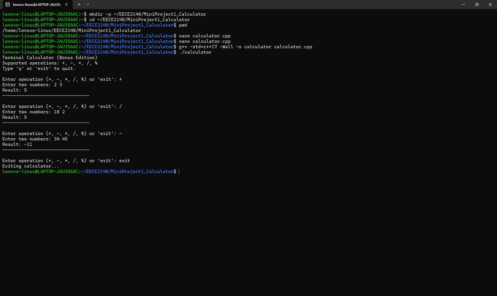

Overview项目概述
A command-line arithmetic calculator written in C++ supporting addition, subtraction, multiplication, division, and modulo operations with an interactive operation loop and exit command. The program includes robust input validation using std::limits to recover from malformed input, and was compiled with strict warnings (g++ -std=c++17 -Wall).一个用 C++ 编写的命令行算术计算器，支持加、减、乘、除和取模运算，带交互式运算循环和退出命令。程序使用 std::limits 进行健壮的输入校验以从非法输入中恢复，并在严格警告下编译（g++ -std=c++17 -Wall）。
Gallery图库
Click any image to enlarge.点击任意图片可放大。

Compiling and running the terminal calculator, demonstrating addition, division, and modulo operations with computed results.编译并运行该终端计算器，演示加法、除法和取模运算及其计算结果。